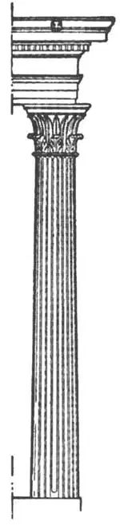
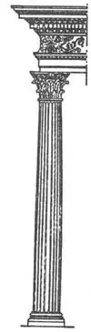
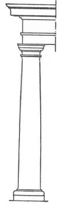
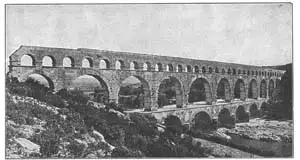

65
NEW STYLES IN BUILDINGS
建筑新风格

PEOPLE get tired of seeing the same styles in dresses and hats and try to start something new. Ladies nowadays go to Paris for their styles. In the same way, architects used to go to Greece for their styles in buildings. Some architects have tried to start new styles in columns just to have something new and different, but the columns they have invented have all been less beautiful than the two Greek columns I have described.
The Greeks started a new style of column called the Corinthian, but they didn’t like it very much themselves and hardly used it at all. The old architect Vitruvius, who told us the story of the Ionic column, tells us another fairytale to explain the Corinthian capital.
Vitruvius said that a basket of toys with a tile over the top was placed on the grave of a little girl in Corinth, as was the custom in those days. By chance, the basket had been placed directly over a thistle plant and the leaves of the thistle grew up around the basket. An architect, seeing this basket with the leaves curling round it, thought it would make a good design for a capital of a column, and so he copied it in marble and put it on an Ionic column in place of the Ionic capital. In this way was invented the Corinthian column.

No.65-1 CORINTHIAN
COLUMN
（科林斯林柱式）
So the Corinthian column is just an Ionic column with a different capital. The Greek thistle is called the acanthus , so the leaves which curl upward and outward on each side of the Corinthian capital are acanthus leaves. Just underneath the tile, which is called the abacus , are four corner scrolls or curls. They are like curl shavings the carpenter makes with his plane, but not like those of the Ionic capital, which are like rolls of music. The Ionic curls faced front and back, but the Corinthian curls faced cornerwise.
Many people think the Corinthian capital more beautiful than either the Doric or the Ionic, but others think it too fancy and not natural to have stone beams resting on leaves. At any rate, though the Greeks invented the Corinthian column, they hardly used it at all.
The Greeks finished all their great buildings about three hundred years before Christ was born, and all their great architects seem to have died, for no great ones lived after that time.
You know, from your geography, that Greece is nearly-an-island (called a peninsula) in the Mediterranean Sea. Next door to Greece is another near-island or peninsula called Italy. The capital of Italy was Rome, and after Greece had lost her power Rome became the capital—that is, the head—of most of the world.
The Greeks were great architects, but the Romans were great builders. There is a difference. The Romans built many fine buildings, but they didn’t have as good taste as the Greeks. The Romans liked the Corinthian column better than either the Doric or the Ionic. The Romans also made another column composed of both Ionic and Corinthian capitals and so this column is called Composite. It had the large curls, or volutes, of the Ionic and the acanthus leaves of the Corinthian. Often it is hard to tell whether a column is Corinthian or Composite. In the Composite column, the Ionic top is larger than in the Corinthian, that is all. The Romans also changed the Doric column—gave it a base and left out the flutings and the saucer shaped part of the capital. This kind of Roman column was called Etruscan Doric or Tuscan.
The Romans made other changes in their styles of building changes for the worse. In order to make columns seem higher than they were, they frequently put a box-like base or pedestal beneath each column. They also placed split half-columns against walls. Such half-columns built against the wall are called engaged . Other columns they flattened out against the wall so that they appeared square. A column so flattened out is called a pilaster . You can remember the name by thinking of “plaster” and putting an i between the p and l .
The greatest thing the Romans did for building was to use the arch. As you know, the Assyrians invented the arch but used it very little because they had very little stone with which to build arches. But they never rested their arches on columns. The Greeks and other architects before them placed a single stone across from column to column. But a single slab of stone could not reach very far, so the spaces between columns were never very great and never could be very great. The Romans were the first to make arches from column to column instead of using straight slabs of stone from column to column.
The Romans also made barrel vaults and domes which, you remember, were arched ceilings built on the same principle as the arch. By using the dome and the vault, they were able to roof over much larger spaces than ever could have been roofed over with single slabs of stone or with wooden roofs. Furthermore, a vaulted or domed roof of stone was fireproof, whereas a wooden roof, of course, was not.

No.65-3
COMPOSITE COLUMN
（混合型柱式）

No.65-4
TUSCAN COLUMN
（托斯卡纳柱式）
Another great thing the Romans did for building was to use cement and concrete. Concrete is a mixture of cement with water and sand and pebbles. This mixture turns into stone when it dries. The Romans used cement between the stones of their arches and they made their domes and vaults of concrete. Now, an arch or a dome or a vault, if properly put together, needs no cement, for the stones push against one another so tightly they can’t slip through and down. But, as I have told you, an arch does need heavy walls at the side so that the stone in the arch will not push over the walls, for the weight of each stone pushes and shoves sideways.
The Romans found a way out of this difficulty. They made their vaults and domes with cement or concrete to hold the stones together so that the vault or dome became a single solid stone. Such a concrete dome pushes downward but doesn’t push sideways, so that heavy side walls are not really necessary.
You can rest a trunk or a piano or an automobile on blocks or bricks and the trunk or piano or automobile will not fall. But if the blocks or bricks are pushed sideways the least bit, the load they carry will fall. Have you ever stood up a row of blocks or bricks and tried to walk across them? Try it. If you press straight clown as you step on them, they will not fall, but if you shove them sideways the least little bit, over they go! Well, it’s the same with a load on a column or a wall. As I have explained if the load presses straight down, a small column or small wall will hold the load perfectly well; but the separate stones in an arch do not push straight down. They push sideways and the wall must be made very heavy to keep from being pushed over by an arch. When, however, you have a row of arches on columns, each arch pushes against the next arch and the next arch pushes back so that there is no side push on the columns.
Arches push and shove. You may not see it, but they do. Try pushing against another boy who pushes against you. You can lean together like the sides of a letter A, but if one suddenly stops pushing or jumps aside, down the other goes. That’s the way one arch pushes against another. Knock away one arch and down the other goes.

No.65-5 ROMAN ARCHES, PONT DU GARD, NIMES, FRANCE
（位于法国尼姆蓬度加尔的罗马式拱门）
【中文阅读】
人们总是厌倦一成不变的衣帽式样，总想尝试新的款式。今天，妇女们总是到巴黎去寻找新服式。同样，建筑师们也总是去希腊寻求建筑的新风格。有些建筑师采用新柱式，以突出某种新尝试和与众不同的特征，但他们所设计的新型柱式并没有我所描述的两种希腊柱式那样好看。
希腊人后来又设计了一种新柱式，称作“科林斯柱式”，但实际上希腊人并不喜欢，而且几乎从不采纳。古代建筑师维特鲁威曾对我们讲过爱奥尼亚柱式的故事，下面他将用另外一个童话般故事向我们讲述科林斯柱式的由来。
维特鲁威说，在科林斯有这样一种习俗，人们会在去世的小女孩坟头献上一篮子玩具，上面盖着一块瓷瓦，这种习俗沿用至今。偶然的一次机会，篮子直接被放在了一种蓟科植物上，蓟的叶子慢慢生长，将整个花篮包裹起来。这恰好被一位建筑师发现了，他觉得这可以当作柱头的造型，于是就采用了这种方式，将材料换成大理石， 放到爱奥尼亚柱子的柱头上，取代了爱奥尼亚原有的柱头。于是便有了科林斯柱式。
所以科林斯柱式与爱奥尼亚柱式比起来只是柱头不一样。希腊的蓟科植物叫做莨苕，叶子从四边向外向上生长，所以科林斯式柱头像莨苕叶。柱顶瓷砖下方的四个拐角叫做叶形装饰，都是卷轴状的或曲线状的，就像是木匠刨子底下的刨花一样。但它和爱奥尼亚式柱头装饰还是不同，后者如同节奏起伏的音乐。爱奥尼亚的波形柱头前后对峙，而科林斯式曲线柱头却呈对角线。
许多人认为科林斯柱头比陶立克柱头和爱奥尼亚柱头都要好看，但也有人认为这种造型太花哨了，而且把巨石横梁搭在树叶上看起来很不自然。总而言之，虽然希腊人发明了科林斯柱式，但他们却很少采用。
希腊人大约在公元前300年就完成了所有的宏大建筑，当时伟大的建筑师似乎都过世了，因为后来再没有出现过一位伟大的建筑师了。
你们知道，根据所学的地理知识，希腊可以说是地中海的一个岛屿（亚平宁半岛）。希腊的邻居是另外一个半岛，或类似岛屿，叫做意大利。意大利的首都叫罗马。希腊衰败以后，罗马开始成为世界的中心，统治世界的绝大部分地区。
希腊人是杰出的建筑师，而罗马人却是杰出的建造者。建筑师与建造者是有区别的。罗马人建造了许多漂亮的建筑物，但他们并不具备希腊人那样高雅的品位。相对于陶立克柱式和爱奥尼亚柱式，罗马人更喜欢科林斯柱式。罗马人还建造了一种将陶立克风格与爱奥尼亚风格融合在一起的柱式，所以这种柱式叫做“混合型柱式”。它有爱奥尼亚的大卷，或涡型花纹，也有科林斯的莨苕叶状。有时你很难区分一种柱式究竟是科林斯的还是混合型的。在混合型柱式中，爱奥尼亚柱头比科林斯柱头要大，其实也就这么点区别。罗马人对爱奥尼亚柱式作了些修改——给它加了一个地基，并把柱头上原有的托盘状部分和柱身的凹槽去掉了。这种罗马风格的柱式叫做“伊特洛里亚陶立克柱式”或“托斯卡纳柱式”。
罗马人在他们的建筑风格上还作了一些别的修改——越改越糟。为了使柱子看起来比本身还要高，他们往往会将一个盒状的垒或基放在每根柱子的下方。他们也会将柱子抵着墙树立，只露出半身。这些抵墙而立的柱子叫做“半露柱”。还有一些柱子被挤压在墙上，看起来是方的。这种柱式叫做“壁柱”。你可以通过联想plaster（石膏）来记忆pilaster（壁柱），plaster（石膏）在p和l中间放一个i就是pilaster（壁柱）。
罗马人对建筑的最大贡献就是采用了拱门。你知道吗，亚述人虽然发明了拱门，但却很少采用，因为他们没有足够的石头来建造拱门。但罗马人从不靠柱子来支撑拱门。希腊人和他们之前的建筑师会在柱子之间放一块石头。但一块单一的石板显然不够长，所以两柱之间的距离就决不会太大，也不可能太大。罗马人率先在柱子之间以拱门代替石块。
罗马人还建造了拱顶和圆顶，你会记得，圆顶就是以和拱门同样原理建成的拱形天顶。拱顶可以撑起比用石块或木块撑起的面积多得多的天顶。此外，石砌的拱形或圆形天顶还可以防火，而木制的，当然不能。
罗马人对建筑的另外一个贡献就是使用了水泥和混凝土。混凝土是水泥、水和 沙石的混合物。这种混合物干了之后就变成了石头。罗马人在拱门的石块之间使用水泥，再用混凝土建造拱顶和圆顶。我们现在建造拱门、圆顶、尖顶都不需要水泥了，因为石头一个挤压着一个，根本就不会滑落下来。但就像我之前介绍过的一样，拱门的侧边必须要有厚厚的墙壁，只有这样拱门的石头才不会挤倒墙壁，因为每块石头的重量都会对侧边产生挤压。
罗马人找到了解决这个问题的方法。他们用水泥或混凝土将石头连接在一起来建造拱顶或圆顶，使拱顶或圆顶成为一个坚固的整体。这样一来圆顶或拱顶只向下挤压，而不向侧边挤压，所以也就不需要在两边建造厚厚的墙壁了。
你可以将一根树干、一架钢琴、或一部小车平放在石块或砖块上，它们一般不会坠落。但如果这些负重的石块或砖块因受力向侧边哪怕挤压一点点的话，它们所负的重物就会坠落。你有没有试过站在一排石块或砖块上，并试图从上面走过去呢？试一试吧。如果你的压力只是垂直向下的话，石块或砖块就不会倾倒。但你若向某个侧边稍稍偏压哪怕一点点，石块或砖块立马就倒！这与柱子或墙壁的受压是同样的道理。如同我所解释的那样，如果是垂直向下施压的话，一根柱子或一堵墙都能很好地承受重量，但是拱门里分开的柱子却不是垂直施力的，它们向侧边挤压，因此侧边的墙壁一定得砌得结实坚固，才能免受拱门的挤压。但如果你要在一排柱子上建造多个拱门的话，而每个拱门都在相互挤压，彼此受力，相互抵消，这样柱子就不会受到侧边挤压了。
拱门形成的挤压也许你看不到，但事实就是如此。试着找个同学，你们相互挤压一下看看，就像大写字母A一样斜靠在一起，但如果其中一人突然停止挤压，或突然跳开，对方就会立刻摔倒。拱门就是采用了这样相互挤压的方式。要是其中一个拱门倒了，紧邻的那一个也会倒。